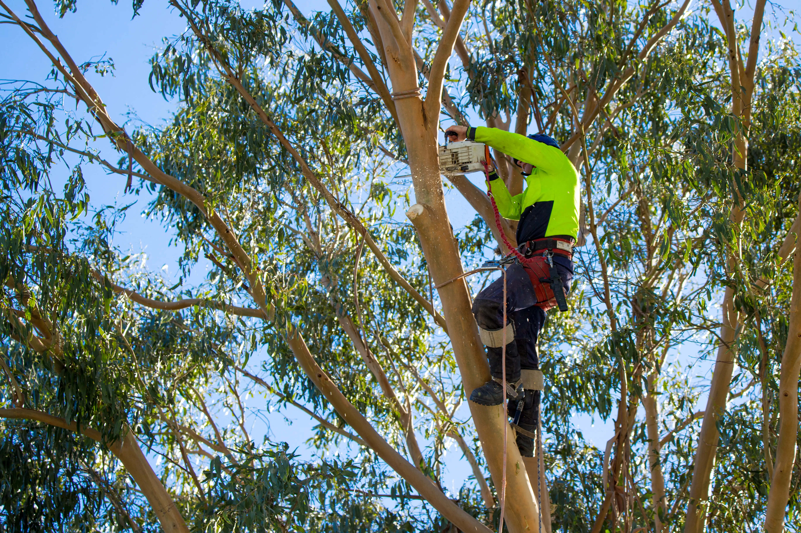
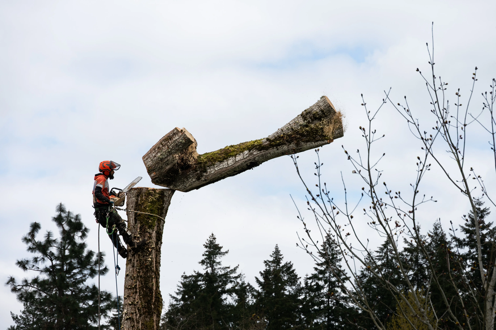
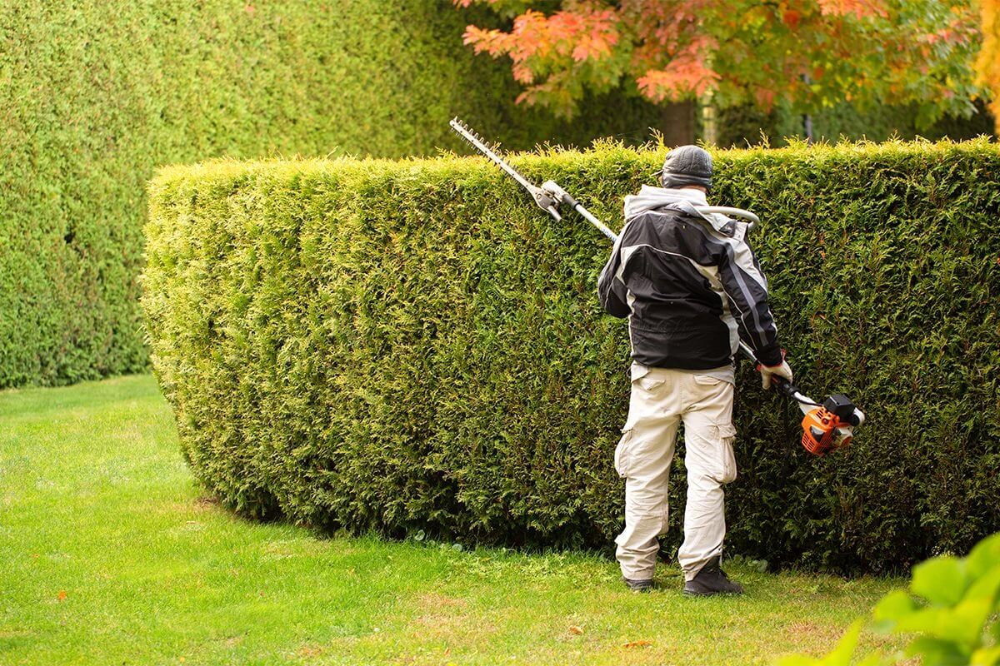
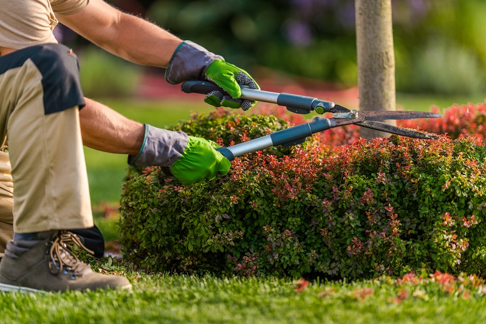
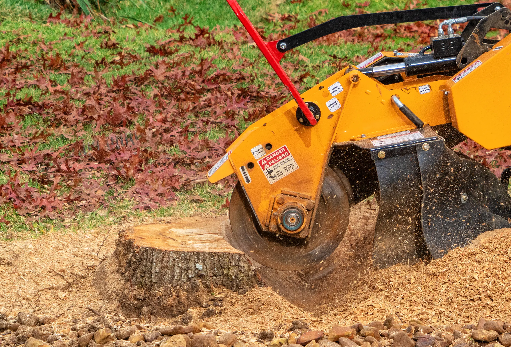

About Flora Tree Services
Flora Tree Services is a locally owned and operated arborist and garden care company
proudly based in Canberra, ACT. Our priority is safe, professional tree work combined with reliable garden maintenance for homes, businesses, and community spaces. Whether it's removing a dangerous gum tree, shaping ornamental hedges, or keeping your garden tidy year-round, we deliver solutions that are both practical and affordable.
With years of hands-on expertise in tree removal, pruning, stump grinding, hedge trimming, and full garden care, our team understands the unique challenges of Canberra's climate and landscapes. We are fully insured, safety-focused, and committed to leaving every property cleaner, healthier, and more beautiful than we found it.
Choose Flora Tree Services for trusted local expertise, competitive pricing, and a clean, professional finish—every time.
What we do

Tree Removal & Lopping
Safe and professional tree removal with expert climbers and equipment.
Tree Pruning
Maintain tree health and shape with precise pruning techniques.

Hedge Trimming
Crisp, even hedge lines to keep your garden looking neat year-round.

Garden Maintenance
From mowing to seasonal clean-ups, we keep your garden thriving.

Stump Grinding
Remove old stumps quickly and safely to reclaim your outdoor space.
Why Choose Flora Tree Services
We combine local expertise, safety-first practices, and fair pricing to deliver the best tree care in Canberra & Queanbeyan.
-
Free Site Assessment
No-obligation inspections to explain options and costs before you commit.
-
Qualified & Insured Arborists
Experienced, fully insured crews for safe work in tight or hazardous conditions.
-
Fast & Reliable Service
From storm callouts to routine pruning, we turn up on time and get it done right.
-
Trusted Local Team
Proudly serving Canberra, Queanbeyan, Googong & Jerrabomberra with great reviews.
What our customers say
“Hedge shaping and garden tidy before our rental inspection—on time, polite, and fantastic results.”
Priya Shah
“They safely removed a leaning gum near our fence and left everything spotless—great value and very professional.”
Sarah Nguyen
“Formative pruning and stump grinding on our new build block—careful work and great advice.”
Liam O'Connor
“Our ornamental pears were pruned beautifully—more light inside and a clean, natural shape.”
Emma Greed
“Four old stumps ground out quickly, neat finish and no mess.”